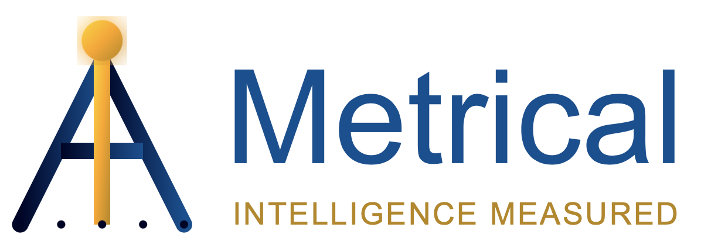

AIMetrical Privacy Policy
Effective Date: September 8, 2025
Last Updated: September 8, 2025
AIMetrical is a Chrome extension dedicated to protecting your privacy while providing valuable AI usage analytics and security protection. This privacy policy explains how our extension collects, uses, and protects your information, and it outlines your rights under relevant data protection laws.
**A note on local storage:** The extension does not use any cookies. It uses a small amount of encrypted local storage to manage your settings and a randomly generated session ID, all of which remain on your device.
Information We Collect
Automatically Collected Usage Data (Pseudonymized)
To provide our core services, the AIMetrical extension automatically collects certain usage data. This data is **pseudonymized**, meaning it is linked to a randomly generated identifier and not directly to your personal identity.
- AI Platform Usage Analytics: AI platform usage patterns (e.g., Claude, ChatGPT, Gemini), AI model preferences, usage frequency, timing patterns, and session duration.
- Security Scan Results: Types of sensitive data patterns detected (e.g., email, phone, SSN patterns) and frequency of potential security risks.
- Technical Information: Session identifiers, extension version, and performance metrics.
Voluntarily Provided Information (With Explicit Consent)
We offer the option to provide demographic information to help us create industry benchmarks. Providing this information is entirely voluntary.
- Optional Demographic Data: Industry category, company size range, job role, and AI experience level.
Important: This demographic information is collected only with your explicit, separate consent and can be declined without affecting the extension's functionality.
Information We Do NOT Collect
We have a strict data minimization policy. The AIMetrical extension is designed not to collect:
- Personal identifiers: Your name, address, phone number, or email address.
- AI conversation content: Your actual prompts, messages, or AI responses.
- Sensitive data content: The actual content of detected sensitive data patterns.
- Authentication credentials: Your passwords or login information for any service.
- Browsing history: Websites or web pages outside of supported AI platforms.
- Location information: Geographic data or IP addresses.
How We Use Your Information
For Your Direct Benefit
- Analytics Dashboard: To display your usage statistics and productivity trends.
- Security Protection: To alert you to potential sensitive data exposure.
- Optimization Recommendations: To suggest which AI platforms might be more efficient for specific tasks.
For Service Improvement
All data used for research and insights is aggregated and anonymized. Individual user patterns cannot be identified or isolated from this data.
Data Sharing and Third Parties
We do not share any individual usage patterns, AI conversation content, or security scan results containing sensitive data.
Third-Party Services (Data Processors)
We use the following third-party data processors to provide the AIMetrical service under strict security controls:
- Supabase (Database Hosting): To store pseudonymized usage analytics and demographics securely.
- Vercel (API Hosting): To process pseudonymized data uploads and provide secure API endpoints.
Data Security and Retention
All data transmitted between the extension and our servers is encrypted using HTTPS. All sensitive data pattern detection occurs locally on your device.
- Usage analytics: Retained for a maximum of 30 days.
- Security scan results: Retained for a maximum of 7 days.
- Optional demographics: Retained until you revoke consent.
Your Privacy Rights
- Right to Opt-out: You can decline optional data collection at any time.
- Right to Access: You can review a summary of your pseudonymized usage statistics.
- Right to Deletion: You can request data deletion. Uninstalling the extension automatically deletes your data.
Contact Information
For privacy-related questions or concerns, please contact our support team at: support@aimetrical.com
Compliance
This privacy policy is designed to comply with:
- The General Data Protection Regulation (GDPR)
- The California Consumer Privacy Act (CCPA)
- The Chrome Web Store Developer Program Policies